安徽新华棋林社棋心愉悦杯五子棋比赛
#1 安徽新华棋林社棋心愉悦杯五子棋比赛作者：淡月疏星 发表时间：2011-11-27 12:55:12
经过安徽新华棋林社的全体努力，棋心愉悦的赞助下，
对安徽新华8个院校每个大一班级宣传。本次比赛共有参赛人员和工作人员将近两百人。
算得上是一次五子棋的一次比较大的高校赛。为期2天的比赛，闭幕式与今天结束。
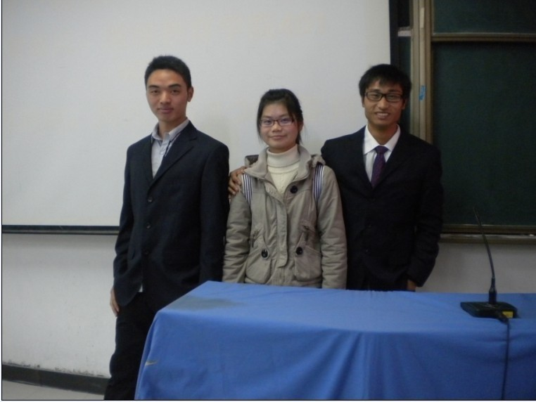
安徽
新华棋林社负责人叶文军，潘冰，张小羊。
在此感谢三位跑了3天的大一班级。
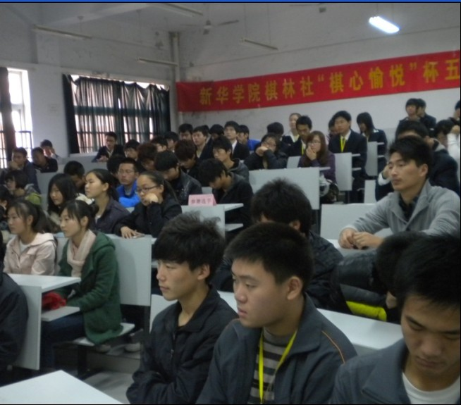
参赛选手
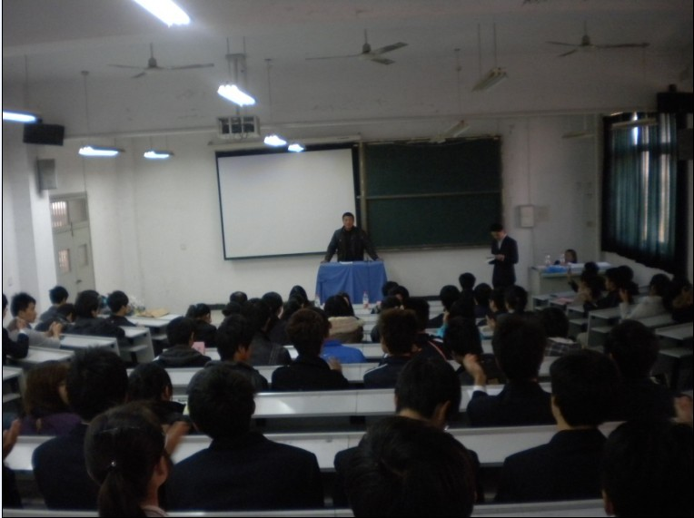
安徽新华体育教研组王军老师开幕式讲话
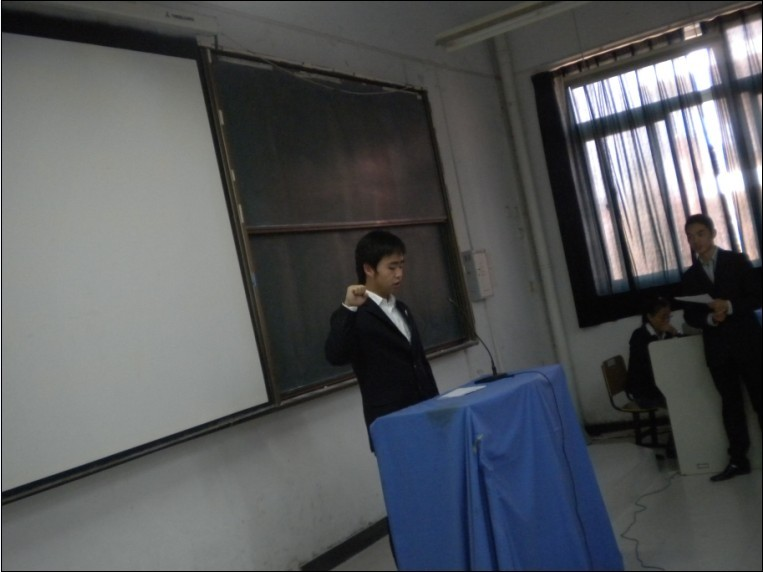
裁判长李晓栋宣誓
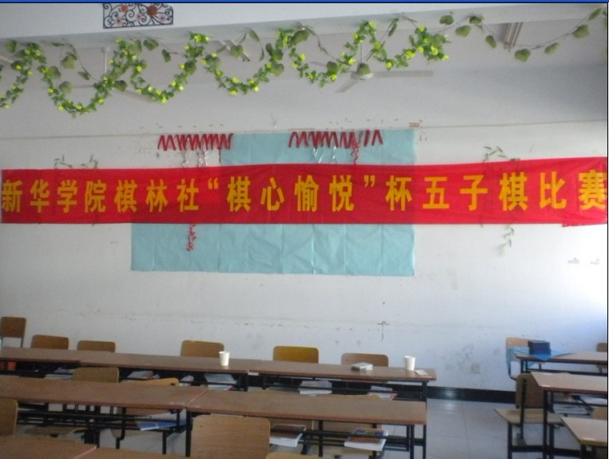
比赛赛场
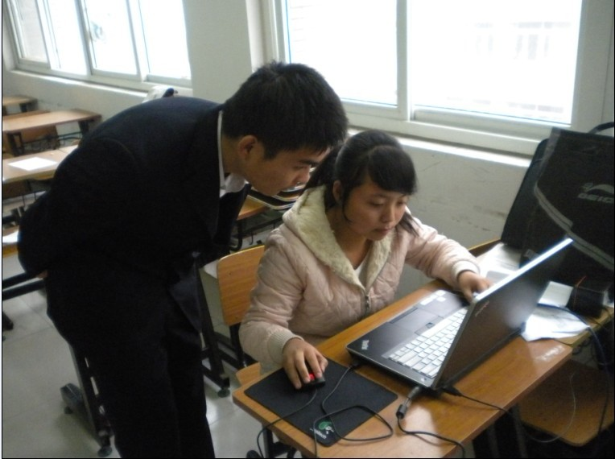
在此感谢全国五子棋裁判陈国良老师的指导五子棋编排积分软件。
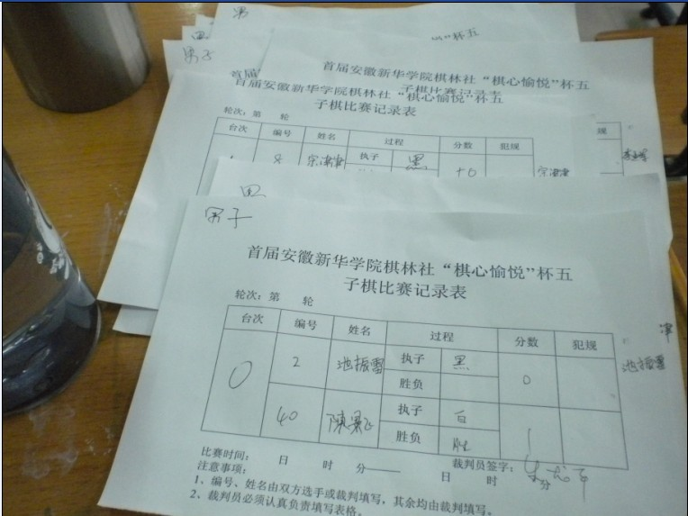
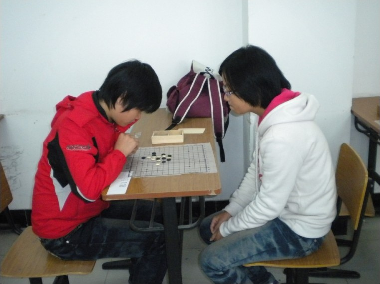
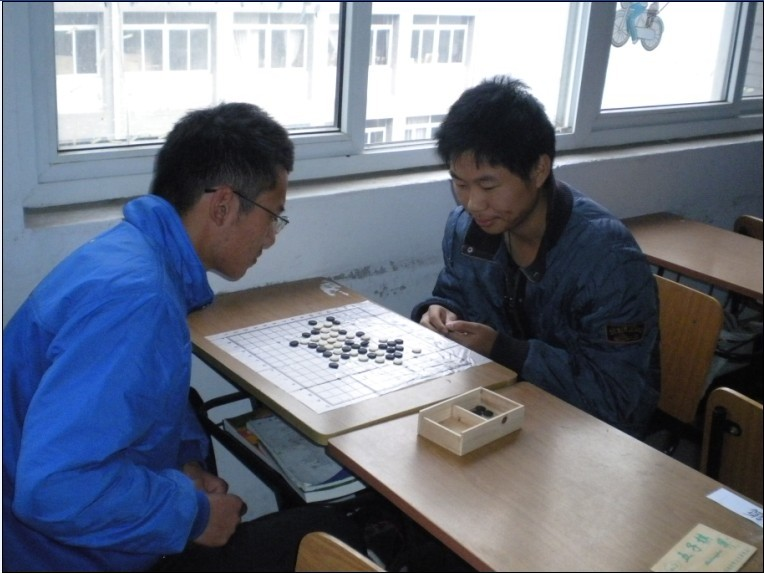
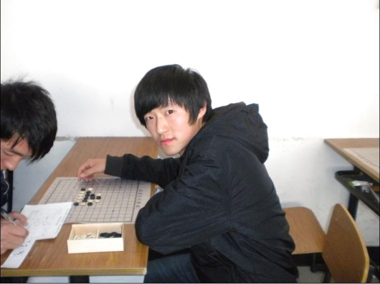
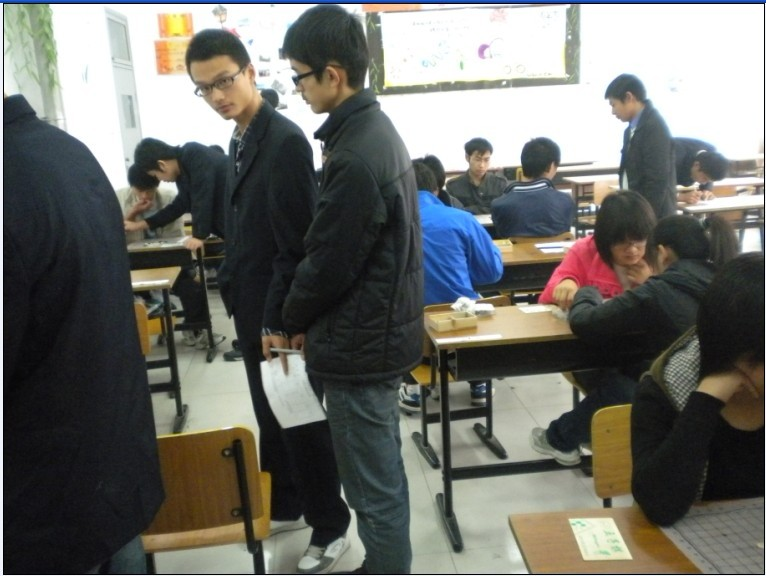
比赛选手
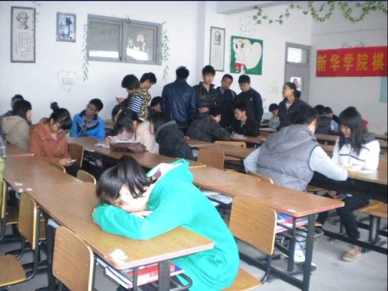
经过9轮循环赛的淘汰，决赛人员比赛现场
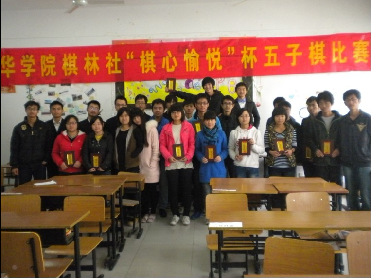
比赛获奖人员和决赛工作人员。
男子组前八：陈景飞 刘国庆 池振雷 籍彬彬 倪仕佳 宗津津 李亚军 王浩
女子组前八：袁凤芹 陈俊峰 张欣欣 沈艳 陈盼洁 李琪 张小敏 王萱
［此帖子已被 淡月疏星 在 2011-11-27 12:56:30 编辑过］
［此帖子已被 淡月疏星 在 2011-11-27 13:02:01 编辑过］
［此帖子已被 淡月疏星 在 2011-11-27 13:02:48 编辑过］
［此帖子已被 淡月疏星 在 2011-11-27 13:04:58 编辑过］
［ 虎哥 于 2011-11-27 13:08:48 时花20金币送鲜花一朵］
［此帖子已被 有志青年 在 2011-11-27 13:13:08 编辑过］
［ 有志青年 于 2011-11-27 13:15:47 时花20金币送鲜花一朵］
［ 魔铃 于 2011-11-27 13:20:13 时花20金币送鲜花一朵］
［ 天籁之琴 于 2011-11-27 13:21:16 时花20金币送鲜花一朵］
［ 天籁之琴 于 2011-11-27 13:21:18 时花20金币送鲜花一朵］
［ 天籁之琴 于 2011-11-27 13:21:20 时花20金币送鲜花一朵］
［ 秋风雾语 于 2011-11-27 13:38:38 时花20金币送鲜花一朵］
［ 秋风雾语 于 2011-11-27 13:38:45 时花20金币送鲜花一朵］
［ 闹静 于 2011-11-27 14:37:50 时花20金币送鲜花一朵］
［ 江西ゞ云格格 于 2011-11-27 14:49:45 时花20金币送鲜花一朵］
［ 江西ゞ云格格 于 2011-11-27 14:49:55 时花20金币送鲜花一朵］
［ 麦烟 于 2011-11-27 16:56:17 时花20金币送鲜花一朵］
［ 冰雪笑醉 于 2011-11-27 17:15:28 时花20金币送鲜花一朵］
［ 傀儡 于 2011-11-27 18:28:06 时花20金币送鲜花一朵］
［ 傀儡 于 2011-11-27 18:28:07 时花20金币送鲜花一朵］
［ 傀儡 于 2011-11-27 18:28:09 时花20金币送鲜花一朵］
［ 逆刃 于 2011-11-27 18:49:59 时奖励此帖[金币加 100 威望加1］
［ 麦烟 于 2011-11-27 19:28:49 时花20金币送鲜花一朵］
［ 伤情路 于 2011-11-27 20:28:01 时花20金币送鲜花一朵］
［ 乐0909 于 2011-11-27 20:49:34 时花20金币送鲜花一朵］
#2 Re:安徽新华棋林社棋心愉悦杯五子棋比赛作者：丁香花开 发表时间：2011-11-27 13:04:03

#3 Re:安徽新华棋林社棋心愉悦杯五子棋比赛作者：淡月疏星 发表时间：2011-11-27 13:05:50
终于会发带图片的文章了。#4 Re:安徽新华棋林社棋心愉悦杯五子棋比赛作者：杀手 发表时间：2011-11-27 13:08:53
好样的，希望这类的比赛越来越多，水平越来越高！！
#5 Re:安徽新华棋林社棋心愉悦杯五子棋比赛作者：棋心愉悦仁字 发表时间：2011-11-27 13:09:49
呼呼，是RIF规则么。淡月有参加吗
#6 Re:安徽新华棋林社棋心愉悦杯五子棋比赛作者：淡月疏星 发表时间：2011-11-27 13:11:17
我没有参加 淘汰赛是无禁 前8强决赛是RIF规则#7 Re:安徽新华棋林社棋心愉悦杯五子棋比赛作者：棋心愉悦原点 发表时间：2011-11-27 13:11:56
这次比赛做的不错·希望以后还会有这样的比赛·这样可以大家五子棋交流·不错
#8 Re:安徽新华棋林社棋心愉悦杯五子棋比赛作者：有志青年 发表时间：2011-11-27 13:15:40
参赛人员多，组织工作有力，有经验的全国赛裁判指导
新人不断……
#9 Re:安徽新华棋林社棋心愉悦杯五子棋比赛作者：可爱梦 发表时间：2011-11-27 13:16:12
哈哈、记得我师傅有去玩~#10 Re:安徽新华棋林社棋心愉悦杯五子棋比赛作者：小小亦默 发表时间：2011-11-27 13:16:59
 不错 话说我还不会发带图片的文 棋心做得不错
不错 话说我还不会发带图片的文 棋心做得不错#11 Re:安徽新华棋林社棋心愉悦杯五子棋比赛作者：靜電 发表时间：2011-11-27 13:29:21
哇，办的这么好。。早知道我也去了。。希望下次扩大规模搞个全合肥市的高校赛。。
#12 Re:安徽新华棋林社棋心愉悦杯五子棋比赛作者：棋心愉悦飘雪 发表时间：2011-11-27 13:32:40
我们棋心愉悦又有新的血液了#13 Re:安徽新华棋林社棋心愉悦杯五子棋比赛作者：釣鱼岛岛主 发表时间：2011-11-27 13:39:52
#14 Re:安徽新华棋林社棋心愉悦杯五子棋比赛作者：病猫不病 发表时间：2011-11-27 14:12:52
来报道喽 支持一下 棋心愉悦加油！！！#15 Re:安徽新华棋林社棋心愉悦杯五子棋比赛作者：闹静 发表时间：2011-11-27 14:37:38
挖~以咱们棋心愉悦之名举办的比赛，太强了！愿棋心愉悦越来越强大，中国的五子棋有越来越多的人关心和参与！
［此帖子已被 闹静 在 2011-11-27 14:38:48 编辑过］
#16 Re:安徽新华棋林社棋心愉悦杯五子棋比赛作者：麦烟 发表时间：2011-11-27 16:55:54
祝贺棋心愉悦杯五子棋 比赛棋手有更好的成绩。#17 Re:安徽新华棋林社棋心愉悦杯五子棋比赛作者：冰雪笑醉 发表时间：2011-11-27 17:16:12
办的蛮好的，以后继续努力！！#18 Re:安徽新华棋林社棋心愉悦杯五子棋比赛作者：徐来 发表时间：2011-11-27 18:27:19

#19 Re:安徽新华棋林社棋心愉悦杯五子棋比赛作者：傀儡 发表时间：2011-11-27 18:28:00
恭喜比赛成功~~~~#20 Re:安徽新华棋林社棋心愉悦杯五子棋比赛作者：伤情路 发表时间：2011-11-27 20:32:09
普及一下禁手知识是必须的，不要让很多兴致勃勃准备参加五子棋比赛的人，看到“有禁手”三个字就缩了。
#21 Re:安徽新华棋林社棋心愉悦杯五子棋比赛作者：乐0909 发表时间：2011-11-27 20:51:14
看到了五子棋在发展，在壮大队伍真好#22 Re:安徽新华棋林社棋心愉悦杯五子棋比赛作者：炫飞☆冲四不挡 发表时间：2011-11-27 23:57:09
同志们辛苦啦，不过最后的证书怎么有点像灵牌位啊
#23 Re:安徽新华棋林社棋心愉悦杯五子棋比赛作者：掌棋宣传员 发表时间：2011-11-28 1:51:56
#24 Re:安徽新华棋林社棋心愉悦杯五子棋比赛作者：蓝天蓝 发表时间：2011-11-28 8:12:02
好样的，希望这类的比赛越来越多，水平越来越高！！
#25 Re:安徽新华棋林社棋心愉悦杯五子棋比赛作者：陈景飞 发表时间：2011-11-28 13:23:25
 不错
不错#26 Re:安徽新华棋林社棋心愉悦杯五子棋比赛作者：雅匪 发表时间：2011-11-28 16:16:43
陕西狼民发来贺电...！